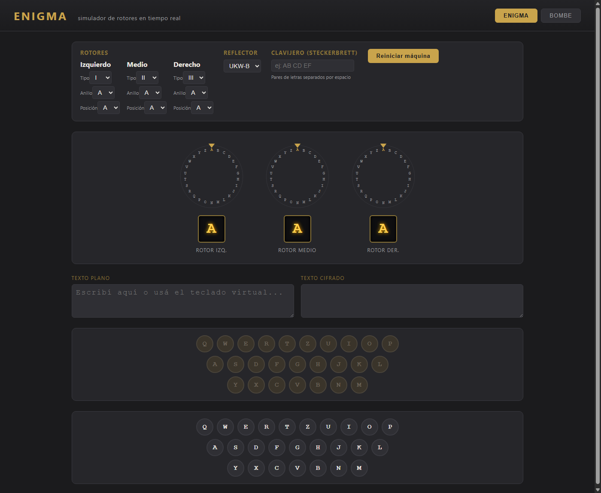
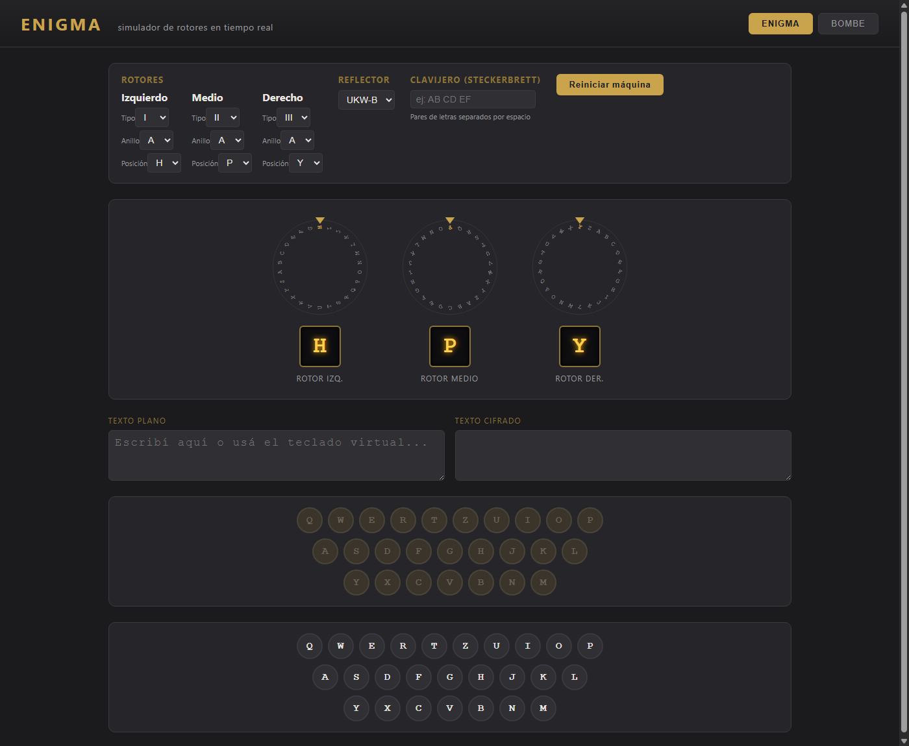
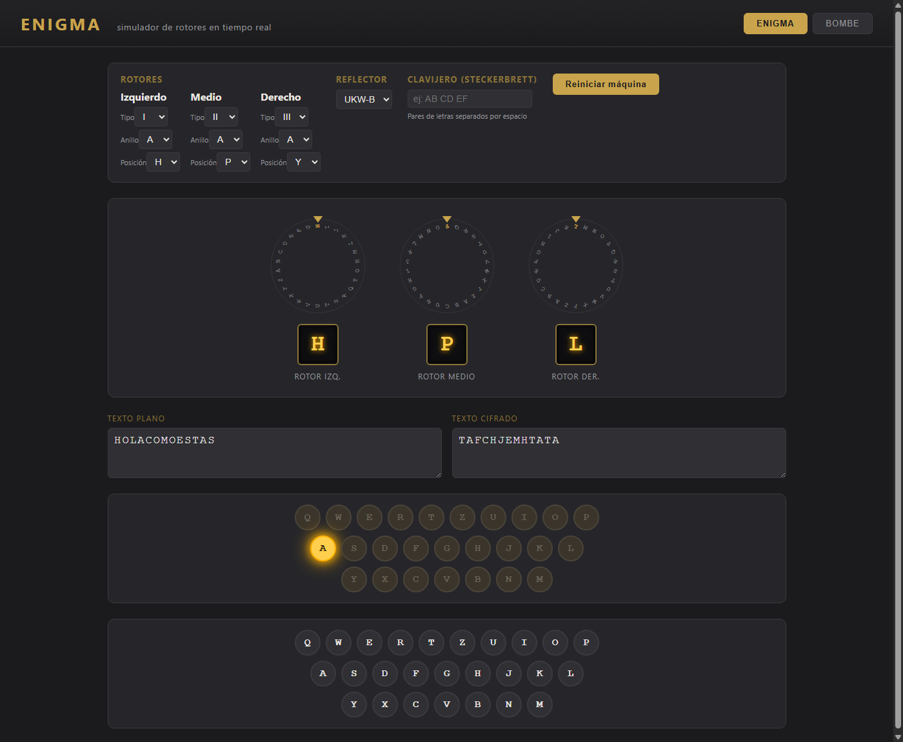
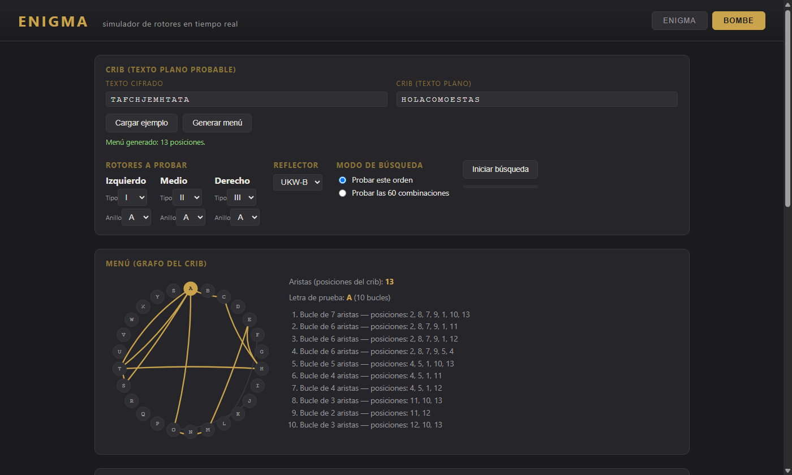
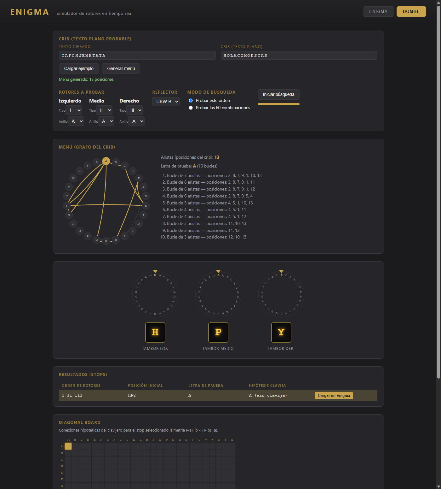
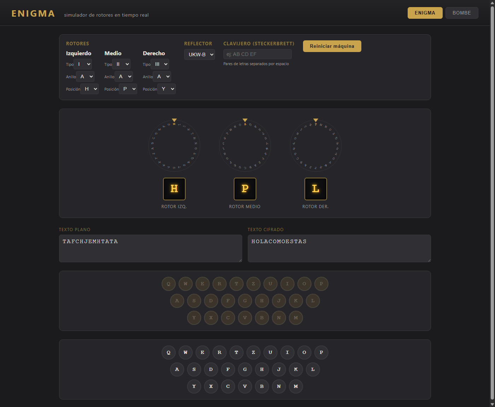

Manual paso a paso: de "HOLA COMO ESTAS" a la Bombe... y de vuelta
Este manual muestra, con capturas de pantalla reales del simulador, el circuito completo de un mensaje:
- Se cifra
HOLA COMO ESTAScon la máquina Enigma, usando una configuración secreta de rotores. - Un "criptoanalista" que solo conoce el texto cifrado y sospecha cuál podría ser el texto plano (un crib) usa la Bombe para deducir la configuración de rotores.
- Esa configuración se carga de nuevo en Enigma y se usa para descifrar el mensaje, recuperando el texto original.
Todo esto ocurre dentro de la misma app, cambiando entre las pestañas Enigma y Bombe.
La clave del día (lo que normalmente sería secreto)
| Parámetro | Valor |
|---|---|
| Rotor izquierdo | I |
| Rotor medio | II |
| Rotor derecho | III |
| Anillos (Ringstellung) | A, A, A |
| Posición inicial | H, P, Y |
| Reflector | UKW-B |
| Clavijero (Steckerbrett) | sin conexiones |
Como el teclado de Enigma solo tiene letras A-Z, el mensaje HOLA COMO ESTAS se escribe sin espacios: HOLACOMOESTAS.
Paso 0 — Abrir el simulador
Al abrir la app aparece la pestaña Enigma con la configuración por defecto (rotores I-II-III, anillos y posiciones en A, reflector UKW-B, sin clavijero), los tres discos de los rotores, el teclado virtual y el panel de lámparas.

Paso 1 — Configurar la clave del día y cifrar el mensaje
En el panel Rotores, se cambia la posición inicial de cada rotor a H, P, Y (izquierdo, medio, derecho) y se hace click en "Reiniciar máquina" para aplicar la nueva posición. Los discos giran hasta mostrar H / P / Y bajo el puntero.

Ahora se escribe HOLACOMOESTAS letra por letra (con el teclado virtual o el físico). Cada pulsación hace girar los rotores, enciende la lámpara correspondiente y agrega las letras a los cuadros de texto plano/cifrado.
Al terminar, el texto plano HOLACOMOESTAS se convirtió en el texto cifrado TAFCHJEMHTATA (se ve la última lámpara encendida, A):

TAFCHJEMHTATA">Este TAFCHJEMHTATA es lo único que viajaría "por el aire" — es lo que un interceptor podría capturar.
Paso 2 — Pasar a la Bombe: cargar el cifrado y el "crib"
Se cambia a la pestaña Bombe. Tenemos el texto cifrado TAFCHJEMHTATA y sospechamos que el mensaje original es HOLACOMOESTAS (esto es el crib: una hipótesis sobre el texto plano, alineada letra a letra con el cifrado).
Se completan los campos Texto cifrado (TAFCHJEMHTATA) y Crib (texto plano) (HOLACOMOESTAS), y se hace click en "Generar menú". La app construye el menú: un grafo donde cada letra es un nodo y cada posición del crib agrega una arista entre la letra plana y la letra cifrada de esa posición. Luego busca la letra con más bucles cerrados (loops).
Se generan 13 aristas y la letra A resulta la mejor letra de prueba, con 10 bucles distintos:

Paso 3 — Ejecutar la búsqueda
El panel "Rotores a probar" viene con el orden I-II-III, igual al usado para cifrar (en la práctica habría que probar las 60 combinaciones posibles). Al hacer click en "Iniciar búsqueda", los tres tambores recorren las 26³ = 17.576 posiciones posibles, comprobando si los 10 bucles del menú son eléctricamente consistentes.
Los tambores se detienen en H / P / Y y la tabla de resultados muestra una única fila:
| Orden de rotores | Posición inicial | Letra de prueba | Hipótesis clavija |
|---|---|---|---|
| I-II-III | HPY | A | A (sin clavija) |
De las 17.576 posiciones posibles, solo una es consistente con el crib — y es exactamente la posición secreta HPY usada para cifrar. El diagonal board resalta la celda A↔A correspondiente a esa hipótesis.

Paso 4 — Cargar la solución en Enigma
Al hacer click en "Cargar en Enigma", la app cambia a la pestaña Enigma, configura los rotores I-II-III, anillos A, posición inicial H-P-Y, reflector UKW-B, deja el clavijero vacío y reinicia la máquina.

Esta es exactamente la misma configuración secreta del Paso 1 — la Bombe la reconstruyó sin haberla visto, solo a partir del texto cifrado y de una hipótesis sobre el texto plano.
Paso 5 — Descifrar y recuperar el mensaje original
Como Enigma es recíproca, basta con escribir el texto cifrado TAFCHJEMHTATA con esta nueva configuración para recuperar letra por letra el texto plano original:

HOLACOMOESTAS">TAFCHJEMHTATA → HOLACOMOESTAS, es decir, HOLA COMO ESTAS. 🎉
Resumen del circuito completo
HOLACOMOESTAS --[Enigma, HPY]--> TAFCHJEMHTATA (Paso 1, pestaña Enigma)
TAFCHJEMHTATA + crib "HOLACOMOESTAS"
--[Bombe: menú -> búsqueda]--> stop = HPY (Pasos 2-3, pestaña Bombe)
HPY --[Cargar en Enigma]--> Enigma configurada en HPY (Paso 4)
TAFCHJEMHTATA --[Enigma, HPY]--> HOLACOMOESTAS (Paso 5, pestaña Enigma)
La Bombe nunca "rompe" Enigma por fuerza bruta ingenua: usa el crib para construir un menú con bucles, y esos bucles descartan casi todas las 17.576 posiciones de una sola pasada. Si el crib es correcto, suele quedar un único candidato — como en este ejemplo — que ya se puede usar directamente para descifrar el resto del mensaje.